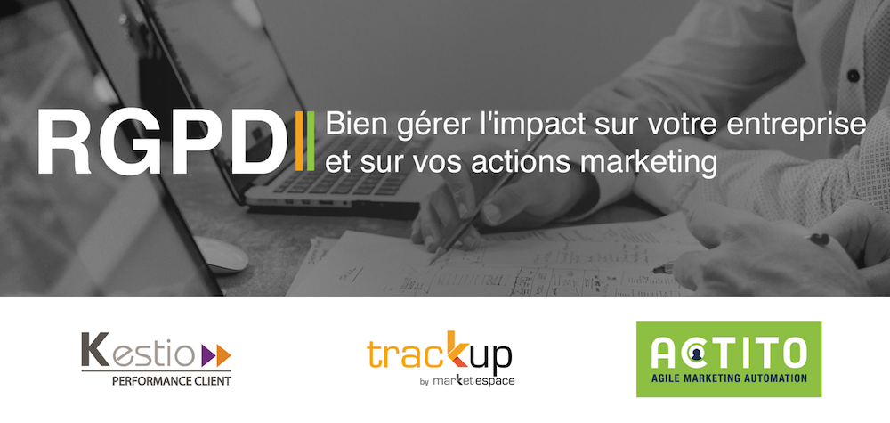
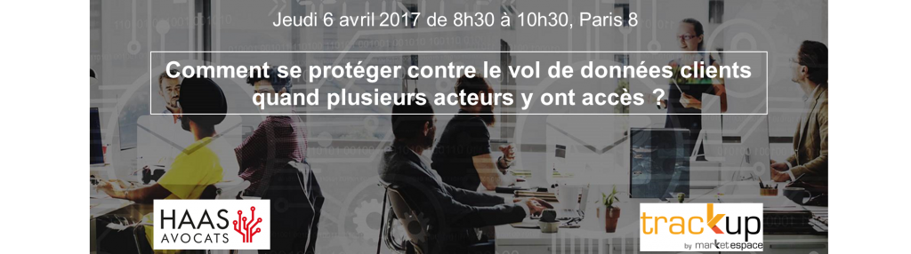
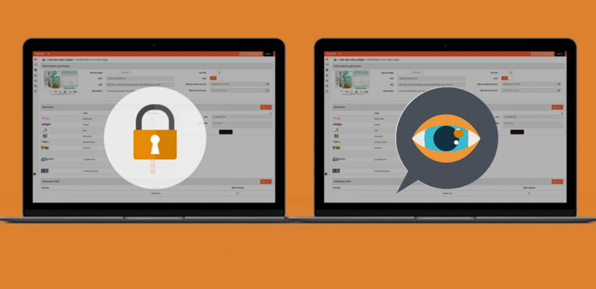
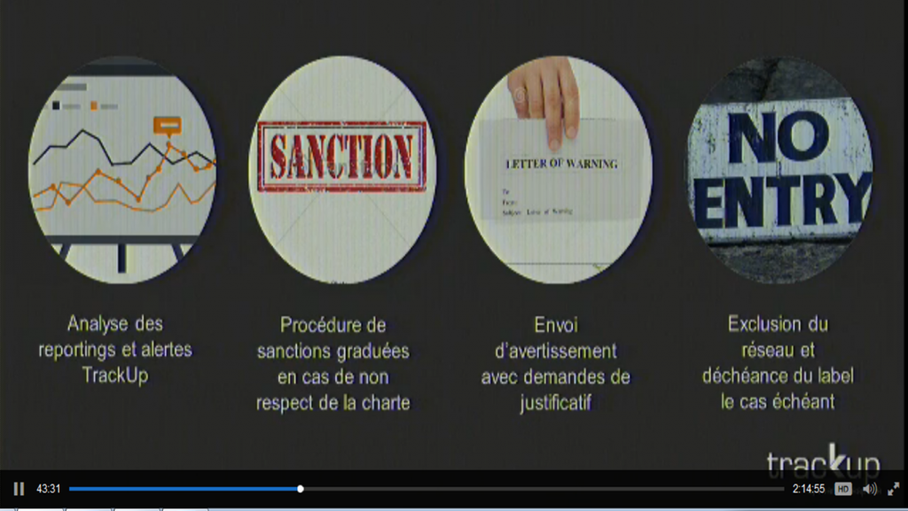

Conférence EuraTechnologies – Lille : Transformons la contrainte réglementaire en levier d’optimisation, faire de la gouvernance des données un projet éthique
Conférence avec BRM Avocats
Transformons la contrainte réglementaire en levier d’optimisation, faire de la gouvernance des données un projet éthique
Mardi 16 mai 2017 de 14h30 à 16h00, EuraTechnologies, Lille
Lire la suite…

Matinée petit-déjeuner & conférence RGPD : Tout ce qu’il faut savoir pour bien gérer l’impact sur votre entreprise et sur vos actions marketing
Matinée petit-déjeuner & conférence RGPD
Tout ce qu’il faut savoir pour bien gérer l’impact sur votre entreprise et sur vos actions marketing
Jeudi 18 mai 2017 de 8h30 à 11h00, Paris 9
Lire la suite…
Tweets de @track_up
Rien à voir ici. Pour le moment.
Quand il publiera des Tweets, ils apparaîtront ici.
Conférence TrackUp / Haas Avocats au salon E-marketing Paris 2017 le 20 avril à 12h00
Conférence TrackUp / Haas Avocats au salon E-marketing Paris 2017
Quelles conséquences le RGDP va-t-il avoir sur votre activité ?
Jeudi 20 avril 2017 de 12h00 à 12h45, salle 3
Lire la suite…

Petit-déjeuner : Comment se protéger contre le vol quand plusieurs acteurs y ont accès ?
Petit-déjeuner en collaboration avec le cabinet Haas Avocats
Comment se protéger contre le vol de données ?
Jeudi 9 février 2017 de 8h30 à 10h30, Paris 8.
Lire la suite…
Petit-déjeuner avec Haas Avocats : Comment se protéger contre le vol de données ?
Petit-déjeuner en collaboration avec le cabinet Haas Avocats
Comment se protéger contre le vol de données ?
Jeudi 9 février 2017 de 8h30 à 10h30, Paris 8.
Lire la suite…
TrackUp vous donne RDV au FIC à Lille les 24 et 25 janvier prochains
TrackUp sera présent au Forum International de la Cybersécurité (FIC), les 24 et 25 janvier 2017 au Grand Palais de Lille.
Lire la suite…
Webinar : Les impacts désastreux d’un vol de données… et si c’était vous ?
La réponse dans notre prochain webinar : jeudi 5 janvier 2017 de 14h30 à 15h00.
Votre base de données est certainement l’actif le plus précieux pour votre business. Aujourd’hui, Les entreprises ne voient pas quand leurs données sont volées ou utilisées à l’encontre du cadre légal CNIL ou du cadre contractuel….
Lire la suite…
Webinar Cybersécurité : Etes-vous sûr que personne d’autre n’utilise vos datas ?
La réponse dans notre prochain webinar : jeudi 15 décembre 2016 de 10h30 à 11h00.
Votre base de données est certainement l’actif le plus précieux pour votre business. L’email est un canal indispensable parce qu’il est très rémunérateur. Par conséquent, vos adresses emails font des envieux auprès des personnes mal intentionnées.
Lire la suite…

Webinar Cybersécurité & gouvernance : connaissez-vous vraiment toutes les sollicitations emailings exercées sur votre base ?
La réponse dans notre prochain webinar : mardi 22 novembre 2016 à 11h.
Votre base de données est certainement l’actif le plus précieux pour votre business. L’email est un canal indispensable parce qu’il est très rémunérateur. Par conséquent, vos adresses emails font des envieux auprès des personnes mal intentionnées.
Lire la suite…

Vidéo : Le CPA s’équipe de TrackUp pour surveiller les pratiques de collecte et de routage de ses membres
EmDay 2016 : Email Marketing Day du 26 mai 2016 à Strasbourg Table ronde : De l’opt-in au retargeting… au milieu il y a une DMP Cas concret : TrackUp surveiller les pratiques des membres du CPA, Collectif de la Performance et de l’Acquisition